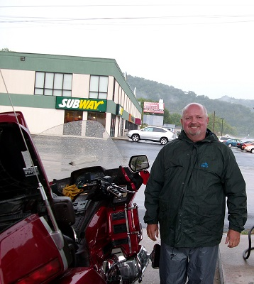
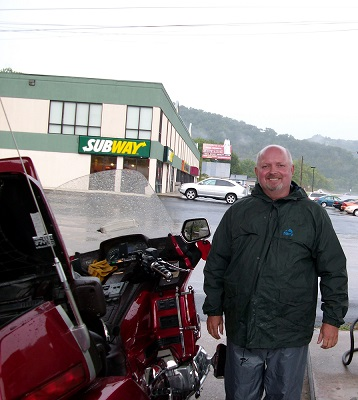

One of my wife and my favorite recreational activities is Motorcycle tour riding on our Goldwing Motorcycle. From our first trip in 2009 to a Cardinals game in Pittsburg to our extended vacation last year to the Smokey Mountains and all of the trips in between, we have traveled on our bikes to more than 20 states.

We are on our second Goldwing since we have been together. The first was a 1994 GL1500 that I purchased used in 2004. We got a new Goldwing in 2010 that we are still riding today.
We love the adventure of getting out on our bike and traveling to distant places or even pulling our tiny camper behind the bike for shorter trips. Some of our favorite destinations are:
The Smokey Mountains are always a favorite destination. The twisty, curvy mountain roads are amazing! Group riding can be awesome!


We also enjoy riding and traveling by ourselves.


And on almost all trips our dog Bailey travels with us.

She loves riding so much that she gets loaded up herself (with just a little help).
Unfortunately the weather does not always cooperate! Rain gear is a must.
 

Each fall our Goldwing motorcycle group had the "Southern Illinois Ride-in" at the state fairgrounds in DuQuoin IL. This is mainly a riding/camping event. The campground is the staging area for the many rides during the 4 day event.
We even have bike games to test our low speed maneuvering skills and how well the rider and passenger work together.


Another favorite destination is Arkansas. Many like to make their starting point Harrison Ar. We however have found a nice little campground just south of there in Jasper.
Either staying at a hotel or having a camping adventure, the riding is great.

If you don't have the time for a long trip, there is some great riding less than 100 miles south of St. Louis.
And of course some great camping if that is your thing.

Lastly another of our favorite destination, perhaps only second to the Smokey Mountains is the Florida panhandle. Although when venturing to Florida we tend to spend a lot of our daytime hours in the ocean and evenings enjoying the dining and nightlife the panhandle has to offer.